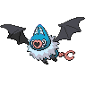

📖 英語版の図鑑説明
The auspicious shape of this Pokémon’s nose apparently led some regions to consider Swoobat a symbol of good luck.
日本語訳
鼻の形が縁起が良いとされ、一部地域では幸運の象徴とされています。
📝 この図鑑文に出てくる英単語
| 英単語 | 意味 | 品詞 | レベル |
|---|---|---|---|
| auspicious | 縁起のよい | 形容詞 | 大学 |
| shape | 形 | 名詞 | 中2 |
| apparently | どうやら〜らしい | 副詞 | 高校 |
| regions | 地方(複数形) | 名詞 | 高校 |
| consider | よく考える、〜とみなす | 動詞 | 高校 |
| symbol | 象徴 | 名詞 | 高校 |
| luck | 運 | 名詞 | 中2 |
💡 英語名「Swoobat」の由来
英語名「Swoobat」は、swoon（うっとりする）、swoop（急降下する）とbat（コウモリ）を組み合わせた名前と考えられている。フランス語の名前は「Rhinolove」で、rhinolophe（キクガシラコウモリ）、love（愛）から作られている。
出典 Bulbapedia
📊 ココロモリの種族値
HP67
こうげき57
ぼうぎょ55
とくこう77
とくぼう55
すばやさ114
合計 425
❓ よくある質問
- ココロモリの英語名は？
- ココロモリの英語名は「Swoobat」です。
- ココロモリの英語名「Swoobat」の由来は？
- 英語名「Swoobat」は、swoon（うっとりする）、swoop（急降下する）とbat（コウモリ）を組み合わせた名前と考えられている。フランス語の名前は「Rhinolove」で、rhinolophe（キクガシラコウモリ）、love（愛）から作られている。
- ココロモリは英語版の図鑑でどう説明されている？
- 「The auspicious shape of this Pokémon’s nose apparently led some regions to consider Swoobat a symbol of good luck.」と書かれています。日本語にすると「鼻の形が縁起が良いとされ、一部地域では幸運の象徴とされています。」という意味です。
ココロモリは第5世代（イッシュ地方）のポケモンです。第5世代（イッシュ地方）の英語名一覧 →